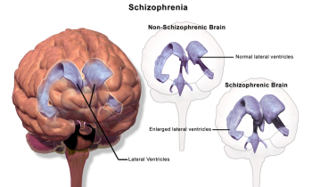
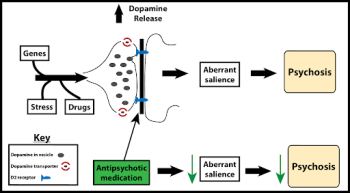

12.2: Schizophrenia
Schizophrenia is a psychological disorder that is characterized by major disturbances in thought, perception, emotion, and behavior. About 0.3-0.7% of the population experiences schizophrenia, and the disorder is usually first diagnosed during early adulthood (late teens to mid-20s). Many people with schizophrenia report significant difficulties in some day-to-day activities, such as holding a job, paying bills, caring for oneself, and maintaining relationships with others. Symptoms of schizophrenia fall into three categories: 1) positive symptoms (symptoms that are “added”), which include hallucinations and delusions; 2) negative symptoms (symptoms that are “subtracted” or taken away), which include flat affect and social withdrawal; and 3) disorganized symptoms, which include disorganized speech and behavior (APA, 2022).
A hallucination is a perceptual experience that occurs in the absence of external stimulation. Auditory hallucinations (e.g., hearing voices) are most common, occurring in roughly two-thirds of patients with schizophrenia (Andreasen, 1987).
Delusions are beliefs that are contrary to reality and are firmly held despite contradictory evidence. Paranoid delusions refer to the (false) belief that other people are plotting to harm them (e.g., that their mother is plotting with the FBI to poison their coffee). Grandiose delusions refer to beliefs that one holds special power, unique knowledge, or is extremely important (e.g., claiming to be Jesus Christ or be a great philosopher). Somatic delusions refer to the belief that something highly abnormal is happening to one’s body (e.g., that one’s kidneys are being eaten by cockroaches).
Negative symptoms refer to a reduction or absence of normal behaviors related to motivation, interest, or expression (Correll & Schooler, 2020). Negative symptoms of schizophrenia include withdrawal from social relationships, reduced speaking, blunted emotion, and reduced experience of pleasure.
Disorganized thinking refers to disjointed and incoherent thought processes—usually detected by what a person says. The person might ramble, exhibit loose associations, jump from topic to topic, or talk so incomprehensibly that it seems they are randomly combining words.
Disorganized or abnormal motor behavior refers to unusual behaviors and movements: becoming unusually active, exhibiting silly child-like behaviors (giggling and self-absorbed smiling), engaging in repeated and purposeless movements, or displaying odd facial expressions and gestures. In some cases, the person exhibits catatonic behaviors, showing decreased reactivity to the environment or maintaining a rigid, bizarre postures for extended periods.[1]
Neural Mechanisms Underlying Schizophrenia
Scientists have identified several neural and biological signatures of schizophrenia. A highly consistent abnormality in brain structure in schizophrenia is enlarged ventricles (the cerebrospinal fluid-filled spaces in the brain). The ventricles in individuals with schizophrenia average around 30% larger than in controls (Figure 1) (Horga et al., 2011). Individuals with schizophrenia typically have smaller hippocampi, amygdalae, and thalami (van Erp et al., 2016) and thinner cortex in frontal and temporal lobe regions (van Erp et al., 2018). Functional neuroimaging studies have shown that patients with schizophrenia display hyperactivity in the hippocampus, a neural structure involved in learning and memory (Kraguljac et al., 2021). This hippocampal hyperactivity is thought to dysregulate the dopamine circuit, which may contribute to distorted interpretations of salience in individuals with schizophrenia. Dopamine dysregulation is one of the most prominent neural mechanisms underlying schizophrenia, and as a result, the most common schizophrenia medications target dopaminergic circuitry.

One early influential biological account of schizophrenia is the “dopamine hypothesis of schizophrenia,” which suggests that excessive dopamine activity is related to schizophrenia (Meltzer & Stahl, 1976). This account was inspired by work showing that drugs that decrease dopamine activity may reduce symptoms related to schizophrenia, and drugs that enhance dopamine activity may increase symptoms (Carlsson & Lindqvist, 1963).
Newer iterations of the dopamine hypothesis have proposed region-specific dopamine imbalances, with reduced dopaminergic activity in the frontal cortex linked to negative symptoms (e.g., social and emotional withdrawal) and hyperactive dopaminergic activity in the striatum associated with positive symptoms (e.g., delusions and hallucinations) (Davis et al., 1991; Pycock et al., 1980). Excess dopamine in the striatum (a subcortical structure involved in processing salience) might cause delusions and hallucinations by making neutral items seem overly important or “aberrantly salient” (Figure 2) (Kapur et al., 2003).
The dopamine hypothesis is an influential but by no means complete explanation for schizophrenia, as newer research has established the important role of other neurotransmitter systems including serotonin and glutamate (Stahl, 2018).

Another influential account is the neural diathesis-stress model of schizophrenia, which proposes that schizophrenia may result from an interaction between preexisting vulnerabilities (“diathesis” means vulnerability or predisposition) and stress caused by life experiences. As discussed in the Genetics Chapter, schizophrenia is highly heritable and has a strong genetic component. People with a close genetic relative with schizophrenia, like a parent, sibling, or twin, are more likely to develop schizophrenia. However, genetically predisposed individuals are far more likely to develop schizophrenia if they experience significant life stress—the stressful events can trigger or catalyze the development of the disorder.
Schizophrenia is highly comorbid with substance abuse disorder and some evidence suggests that the use of various substances (particularly marijuana) may increase an individual’s risk of developing schizophrenia if the genetic predisposition is also present (McCutcheon et al., 2020; Patel et al., 2020). Finally, psychedelics, like LSD and psilocybin, may also increase the risk of psychotic episodes (Simonsson et al., 2023). While psychedelics research shows promise for treating some psychiatric conditions, studies typically exclude individuals with or at risk for schizophrenia or psychotic disorders.
Stress worsens symptoms of schizophrenia and the diathesis (predisposition) is marked by a heightened stress response (Walker & Diforio, 1997). The hypothalamic-pituitary-adrenal gland (HPA) axis releases the hormone cortisol in response to stress. HPA-axis dysfunction, possibly linked to hippocampal abnormalities in schizophrenia, may amplify dopamine neurotransmission and stress sensitivity. Hippocampal, HPA axis, and dopamine dysfunction likely combine to heighten stress responses and schizophrenia vulnerability. To combat the effects of stress, researchers highlight resilience or protective factors, including social support, self-esteem, coping skills, and antipsychotic medication (Pruessner et al., 2017).
While we focus here on the diathesis-stress model for schizophrenia, diathesis-stress models (i.e., the important interaction between predisposition and stressful life events) also apply to other disorders such as depression and anxiety (Arnau-Soler et al., 2019).
Treatments of Schizophrenia
While schizophrenia symptoms are most effectively managed with a combination of psychopharmacological, psychological, and family interventions (where family members are taught about treatment and support options), rarely do these treatments restore a patient to premorbid levels of functioning (Kurtz, 2015). Despite recent advances in treating schizophrenia, it is still viewed as requiring lifelong treatment and care.
Psychopharmacological treatments. Among the first antipsychotic medications used for the treatment of schizophrenia was Thorazine, which is thought to primarily work by blocking postsynaptic D2 dopamine receptors (thereby decreasing dopamine activity in certain parts of the brain). Thorazine decreases positive symptoms, calms severely agitated patients, and allows for the organization of thoughts. Despite their effectiveness in managing psychotic symptoms, conventional antipsychotics such as Thorazine also produced significant side effects including muscle tremors, involuntary movements, and muscle rigidity.
Due to the side effects of conventional antipsychotic drugs, newer, arguably more effective second-generation or atypical antipsychotic drugs have been developed (e.g., clozapine, risperidone, aripiprazole). Atypical antipsychotics affect both dopamine and serotonin receptors, unlike conventional antipsychotics that target only dopamine receptors. This broader action makes atypical antipsychotics more effective in treating both positive and negative symptoms, leading to their use as the typical first-line treatment of schizophrenia (Barnes & Marder, 2011).
Over half of schizophrenic patients discontinue antipsychotic medications due to side effects and other factors like homelessness, substance use disorders, and lack of health insurance (Leucht et al., 2011). Therefore, it is important to incorporate psychological interventions, such as cognitive behavioral therapy (CBT) and family therapy, along with psychopharmacological treatment to both address medication adherence, and provide additional support for managing symptoms (Bridely & Daffin, 2024).[2]
Media Attributions
- Schizophrenia Brain © Wikipedia is licensed under a CC BY (Attribution) license
- Dopamine hypothesis of Schizophrenia © Michael Hove is licensed under a CC BY-NC-SA (Attribution NonCommercial ShareAlike) license


- This section contains material adapted from: Spielman, R. M., Jenkins, W. J., & Lovett, M. D. (2020). 15.8 Schizophrenia. In Psychology 2e. OpenStax. Access for free at https://openstax.org/books/psychology-2e/pages/15-8-schizophrenia License: CC BY 4.0 DEED. ↵
- This section contains material adapted from: Bridley, A., & Daffin, L. W., Jr., (2024). Fundamentals of Psychological Disorders. Washington State University. https://opentext.wsu.edu/abnormal-psych/ License: CC BY-NC-SA 4.0 ↵
Schizophrenia is a psychological disorder characterized by major disturbances in thought, perception, emotion, and behavior. Major symptoms include hallucinations, delusions, disorganized thinking, abnormal motor behavior, and negative symptoms.
Perceptual experience that emerges in the absence of external stimulation. Extends across different sensory sources (i.e., visual, auditory, tactile, etc.)
False beliefs that are contrary to external reality and are firmly held despite contrary evidence
Characterized by intense irrational thoughts and fears centered on perceived victimization or belief that one is being persecuted
Characterized by intense irrational thoughts and fears centered on perceived victimization or belief that one is being persecuted
Characterized by false beliefs that a person’s internal or external bodily functions are abnormal
Refer to an absence or reduction of normal behaviors related to motivation and interest, such as social withdrawal, diminished affective response, lack of interest.
Prominent feature of Schizophrenia; characterized by a pattern of incoherent and illogical thought processes
Prominent feature of Schizophrenia; characterized by extremely disjointed and atypical motor behavior that can cause problems in everyday life, ranging from childlike silliness to unpredictable agitation
Subtype of disorganized or abnormal motor behavior; involves significant reductions in voluntary movement and reduced reactivity to environmental stimulation
An enduring account that suggests a dysregulated dopamine system contributes to symptomatology of schizophrenia; has undergone many iterations
Neurotransmitter involved in learning, motivation, and reward. Implicated in schizophrenia
Stress, through its effects on cortisol, acts upon a pre-existing vulnerability to trigger or worsen schizophrenia symptoms.